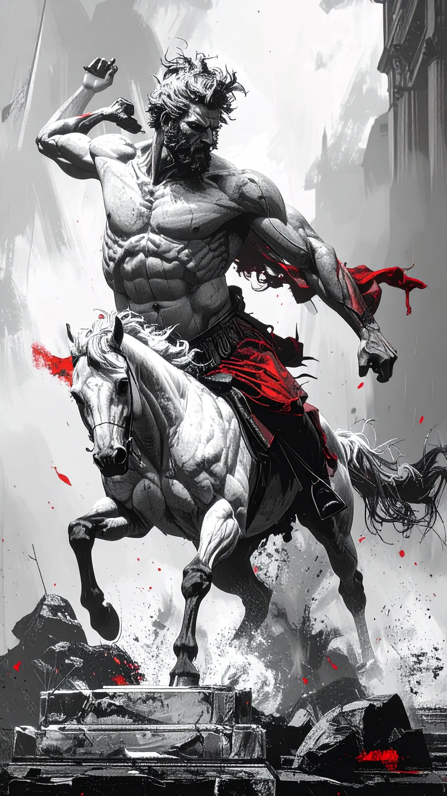

General Behelit
For længe siden, da sand stadig var bjerge og skovene voksede vildt, kom Dem der skaber fra himlen. De besejrede monstrene fra nord og rejste de tre mure, med Regnbyen som centrum. Herfra sendte de deres børn, De stjernefødte, for at herske over Trionien.
Blandt dem var Radahn, stærkest af sine søskende, men grådig. Han allierede sig med monstrene, dræbte sine brødre og søstre og kastede landet i kaos. Kun Roroma, Dronningen af Den røde plage, kunne standse ham – men prisen var ødelæggelsen af Kharzar, nu kaldet Rødland.
Dybt under murene findes en labyrint, efterladt som et ekko af skabernes kraft. Dens rum skifter, lys kan tændes og slukkes, og vandrende væsner lurer. Gåder på væggene, mærkelige maskiner og forvrængede kroppe vidner om tabte eksperimenter. Kun ved at finde nøglen i rum 8 kan vejen til kernens pool åbnes – men hvert skridt koster, og ikke alle udgange fører til frelse.